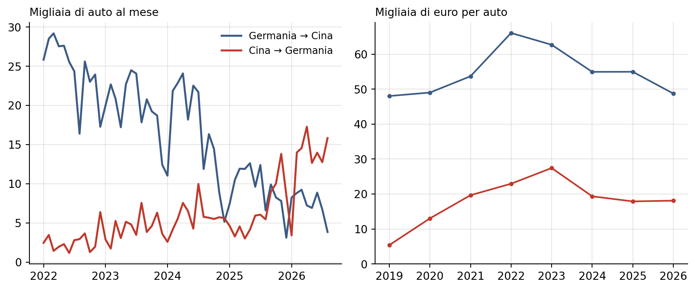
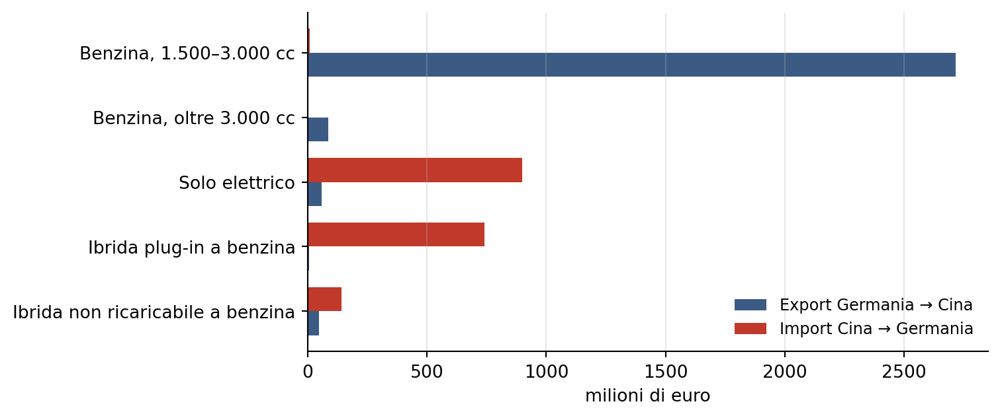

Auto, Germania e Cina: il sorpasso nei dati del commercio estero
Valori, numero di auto e composizione dell’interscambio, gennaio 2022 – agosto 2026
Commercio estero
Automobili
Germania
Cina
Eurostat
Nell’agosto 2026 la Germania ha importato dalla Cina più veicoli e componenti di quanti ne abbia esportati: in valore è un solo mese, in numero di auto la Cina è avanti quasi ogni mese dall’autunno 2025, a circa un terzo del valore per auto.
Paolo Volterra ![]()
Sommario
Italiano. Nell’agosto 2026 la Germania ha importato dalla Cina più veicoli e componenti di quanti ne abbia esportati. Il sorpasso in valore riguarda però un solo mese, che è anche il mese più debole dell’anno per l’export tedesco. In numero di automobili il quadro è diverso: nei primi otto mesi del 2026 la Cina ha spedito in Germania quasi il doppio delle auto che la Germania ha spedito in Cina, a un valore medio per auto pari a poco più di un terzo di quello tedesco. L’export tedesco è fatto quasi solo di auto a benzina di media e grande cilindrata e, sempre di più, di componenti; l’import dalla Cina è fatto di auto elettriche e ibride plug-in.
English. In August 2026 Germany imported more vehicles and parts from China than it exported there. The overtaking in value, however, covers a single month, which is also the weakest month of the year for German exports. Counted in cars the picture differs: in the first eight months of 2026 China shipped to Germany almost twice as many cars as Germany shipped to China, at an average value per car just over a third of the German one. German exports consist almost entirely of mid- and large-engine petrol cars and, increasingly, of parts; imports from China consist of battery-electric and plug-in hybrid cars.
Parole chiave
commercio estero, automobili, Germania, Cina, veicoli elettrici, COMEXT
Nell’agosto 2026 il valore dei veicoli e dei componenti che la Germania ha importato dalla Cina ha superato quello delle sue esportazioni verso la Cina, per la prima volta nel periodo osservato. Il dato viene dalle statistiche del commercio estero dell’Unione europea [1], aggiornate al 16 ottobre 2026. Per leggerlo bene servono tre distinzioni: fra auto e componenti, fra valore e peso, e fra un singolo mese e l’andamento dell’anno.
1 Il sorpasso in valore dura un mese
Il capitolo 87 della nomenclatura doganale comprende tutti i veicoli stradali e le loro parti, non solo le automobili [2]. Le automobili per il trasporto di persone sono una sua voce, la 8703; i componenti e gli accessori sono la voce 8708.
In parole semplici: la linea blu è quanto la Germania vende alla Cina, quella rossa quanto compra. Dal 2022 la linea blu scende molto, la rossa sale piano; le due si incrociano solo all’ultimo mese.
L’export tedesco del capitolo 87 ha toccato 2.935 milioni di euro nel mese di marzo 2022 ed è sceso a 530 milioni nel mese di agosto 2026. L’import dalla Cina ha superato l’export in un solo mese su 56, agosto 2026, con 629 milioni contro 530. Anche per le sole automobili l’import ha superato l’export soltanto nel mese di agosto 2026.
Agosto è ogni anno il mese più debole per l’export tedesco: nel 2024, per esempio, il capitolo 87 è passato da 1.878 milioni a luglio a 1.314 milioni ad agosto. Il sorpasso cade quindi nel mese in cui la linea tedesca è più bassa per ragioni di calendario.
Il valore delle esportazioni è misurato al confine del paese che esporta, quello delle importazioni al confine del paese che importa, con trasporto e assicurazione inclusi [3].1 A parità di merce, quindi, l’import incorpora qualche costo in più dell’export.
2 Che cosa vende la Germania: sempre più componenti
Una parte crescente dell’export tedesco verso la Cina non sono automobili, ma pezzi per le automobili. Nel mese di agosto 2026 i componenti (voce 8708) valevano il 59% dell’export del capitolo 87, contro il 32% nel mese di marzo 2022. È coerente con una produzione dei marchi tedeschi che si sposta in Cina e viene rifornita dalla Germania; i dati di commercio, però, non dicono chi compra i componenti.
3 In numero di auto la Cina è già davanti
Per le automobili le statistiche registrano anche il numero di pezzi, ma solo al livello più fine della nomenclatura (otto cifre); sommando quelle voci si ricostruisce il numero di auto scambiate e il loro valore medio. Qui sono esclusi i veicoli da neve e da golf, che la nomenclatura classifica nella stessa voce delle automobili.

In parole semplici: a sinistra quante automobili passano ogni mese nei due sensi, a destra quanto vale in media ciascuna. Dall’autunno 2025 la Cina spedisce in Germania quasi ogni mese più auto di quante la Germania ne spedisca in Cina, ma ogni auto cinese vale poco più di un terzo di una tedesca.
Da gennaio ad agosto 2026 la Cina ha spedito in Germania 104.442 automobili, contro 59.888 nella direzione opposta; in tutto il 2025 erano state 78.479. In numero di auto l’import ha superato l’export in 10 mesi su 11 da ottobre 2025 in poi (l’eccezione è gennaio 2026), dopo un primo caso isolato nel mese di dicembre 2024; nel mese di agosto 2026 le auto arrivate dalla Cina erano 15.831, quelle partite per la Cina 3.848.
Nello stesso periodo un’automobile tedesca esportata valeva in media 48.724 euro, un’automobile cinese importata 18.092 euro: 2,7 volte meno. Il divario non dipende solo dal tipo di motore: fra le sole auto elettriche il valore medio era 56.124 euro per quelle tedesche e 19.743 per quelle cinesi. Il valore medio dell’auto cinese è sceso da 27.429 euro nel 2023 a 18.092 nel 2026, mentre il numero di auto cresceva: è il profilo di chi guadagna quote abbassando il prezzo. Anche l’auto tedesca esportata vale meno di qualche anno fa (66.049 euro nel 2022), soprattutto perché sono quasi sparite le esportazioni di elettriche e ibride ricaricabili di fascia alta.
Le statistiche registrano anche il peso netto delle merci,2 che porta alla stessa conclusione: nei primi otto mesi del 2026 la Cina ha spedito in Germania 176.644 tonnellate di automobili, contro 120.801. Il confronto in euro mette quindi sullo stesso piano merci con prezzi molto diversi: in quantità il sorpasso cinese è già avvenuto, in valore resta limitato a un mese.
4 Benzina da una parte, elettrico e plug-in dall’altra
La nomenclatura distingue le automobili per tipo di motore: la voce 8703.80 comprende le auto con solo motore elettrico, la 8703.60 le ibride a benzina ricaricabili dalla rete.3

In parole semplici: le barre blu mostrano che cosa la Germania vende alla Cina, quasi solo auto a benzina; le rosse che cosa compra, soprattutto auto elettriche e ibride ricaricabili.
Nei primi otto mesi del 2026 la Germania ha esportato in Cina automobili per 2.918 milioni di euro, di cui 2.715 milioni (il 93%) a benzina con cilindrata fra 1.500 e 3.000 cc; le elettriche erano 59 milioni. L’import dalla Cina, 1.896 milioni, era fatto per 899 milioni di auto elettriche e per 741 milioni di ibride plug-in; nel 2024 le plug-in importate valevano 55 milioni.
5 Che cosa i dati non dicono
I dati di commercio non distinguono i marchi: un’automobile di un marchio europeo o americano prodotta in Cina e spedita in Germania conta come import dalla Cina. Per separare i marchi servono le immatricolazioni per marca. Il valore per auto è il valore dichiarato in dogana, una media che risente del mix di modelli; non è il prezzo pagato dal cliente.
Nota metodologica
Questo documento nasce dall’interazione di tre componenti. L’autore definisce le domande, esercita il giudizio critico e assume la responsabilità scientifica ed editoriale del risultato. Strumenti di intelligenza artificiale generativa sono impiegati a supporto della ricerca bibliografica, della lettura, della sintesi, della riorganizzazione argomentativa e della revisione del testo. Un’infrastruttura open source sviluppata dall’autore automatizza il reperimento, l’armonizzazione e il controllo dei dati dalle fonti statistiche ufficiali, e mantiene l’elaborazione documentata e riproducibile.
Le fonti sono pubblicamente accessibili e citate con la loro denominazione ufficiale; l’analisi è pertanto integralmente auditabile e replicabile da terzi a partire da esse. Le tabelle e i grafici sono elaborazioni dell’autore: calcoli, aggregazioni, trasformazioni e scelte di rappresentazione sono attribuibili all’autore e non agli enti produttori dei dati.
La responsabilità per le fonti utilizzate, le analisi condotte, le elaborazioni effettuate, le interpretazioni proposte e le conclusioni formulate resta interamente in capo all’autore. L’intelligenza artificiale è stata impiegata come ambiente di supporto cognitivo ed editoriale, non come fonte primaria, autore autonomo o sostituto del giudizio critico.
Bibliografia
[1]
Eurostat, «EU trade since 1988 by HS2-4-6 and CN8 (DS-045409)». Comext SDMX API, 2026. Disponibile su: https://ec.europa.eu/eurostat/comext/newxtweb/
[2]
World Customs Organization, «HS Nomenclature 2022 edition, Section XVII, Chapter 87: Vehicles other than railway or tramway rolling-stock, and parts and accessories thereof». 2022. Disponibile su: https://www.wcoomd.org/-/media/wco/public/global/pdf/topics/nomenclature/instruments-and-tools/hs-nomenclature-2022/2022/1787_2022e.pdf
[3]
Eurostat, «International trade in goods, detailed data (ext_go_detail): Reference Metadata in Single Integrated Metadata Structure». 2026. Consultato: 30 ottobre 2026. [Online]. Disponibile su: https://ec.europa.eu/eurostat/cache/metadata/en/ext_go_detail_sims.htm
Note
«It is said to be a FOB (Free On Board) valuation for exports and a CIF (Cost Insurance Freight) valuation for imports.» [3]↩︎
«This is the weight of the goods in kilograms without packaging; this quantity is referred to as the ‘net mass’.» [3]↩︎
«Other vehicles, with both spark-ignition internal combustion piston engine and electric motor as motors for propulsion, capable of being charged by plugging to external source of electric power» [2, p. 2]↩︎